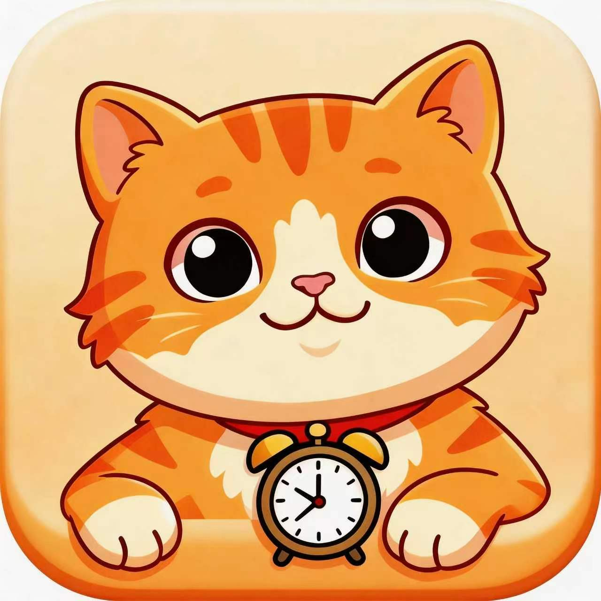

产品化能力
AI 产品落地
关注模型能力与真实需求是否匹配，优先推进清晰、可用、可验证的产品表达。
核心能力
不是为了堆砌技术词，而是为了更快定义问题、验证方向，并把能力稳定地组织成产品体验。
产品化能力
关注模型能力与真实需求是否匹配，优先推进清晰、可用、可验证的产品表达。
Agent 系统
关注任务拆解、流程编排与协作逻辑，思考 agent 机制如何在产品中形成稳定且可持续的体验。
快速验证
结合大模型与 vibe coding 进行低成本试错，让产品想法尽快进入验证与调整周期。
代表项目
这是我以产品设计与全栈开发视角完成的一款 React Native app。 它不是只记录时长，而是把专注行为转化为猫咪成长、情绪陪伴与 AI 解释，让用户更愿意持续回来。

一款用猫咪陪伴、成长奖励与 AI 反馈驱动长期专注习惯形成的情感化专注 app。
我的角色
产品设计、交互结构、前端实现与完整 app 体验落地
技术栈
React Native、React Navigation、AsyncStorage、Dify API
选择陪伴猫咪与专注时长
进入专注态，处理中断与前后台切换
把结果沉淀为 XP、新猫、图鉴与记录
通过 AI 谈心与 AI 分析形成下一轮回流
设计逻辑
我把 FocusMeow 设计成四层叠加的产品骨架：专注工具层、游戏养成层、情感陪伴层、智能解释层，让效率、情绪和长期动力能够同时成立。
核心模块
产品价值
工作流蓝图
输入层
先明确用户任务与场景边界，再决定 AI 应该承担什么角色。
流程层
把模型、agent 与规则机制编排成可理解、可迭代的中间流程。
输出层
通过原型、发布与反馈，判断产品是否真的解决问题并值得继续放大。
研究归档
研究主题 01
关注 AI 协作流程中的约束设计、反馈闭环与执行稳定性，思考如何持续提升人机协同质量。
研究主题 02
关注客户端中的任务组织、工具协作与交互设计，理解工程实现如何映射产品判断。
研究主题 03
关注 Gemma 4 这类开放模型如何用更低硬件门槛提供更强推理、结构化输出与 agentic workflow 支持。
研究主题 04
我主要通过 OpenAI Research 与 System Cards、Anthropic Newsroom / Research / Responsible Scaling Policy、Google DeepMind Research 以及 Gemini / Gemma 官方更新来跟踪模型能力、产品方向与安全边界的真实变化。
在实践上，我会把这些一手信息拆成三层：能力变化、产品机会、验证方法；再用小型原型、真实任务链路和对比评测去判断它是否真的值得进入产品，而不是只停留在“知道了一个新概念”。
向前思考，向现实落地
当前首页仍是第一版原型，但已经建立起清晰的风格语言与信息骨架，后续可以继续向完整作品站推进。